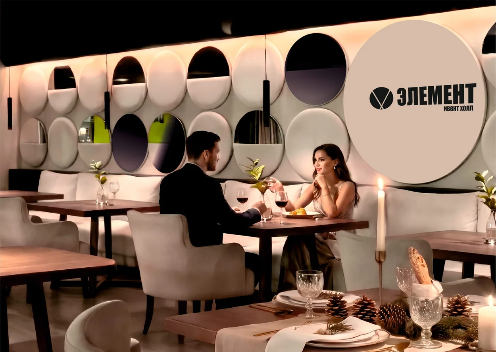

Встреча гостей
До начала банкета близкие могут собраться в лаундже с панорамными окнами. Для приветственного фуршета уточните, сколько гостей соберётся одновременно.
Панорамный лаунджСценарии в «Элементе»
Встреча гостей, банкет и первый танец могут пройти по одному адресу. Выберите пространства под число гостей и программу вечера.
Обсудить программу
Программа
До начала банкета близкие могут собраться в лаундже с панорамными окнами. Для приветственного фуршета уточните, сколько гостей соберётся одновременно.
Панорамный лаунджВ Большом белом зале можно разместить круглые или длинные столы. Вместимость и схему согласуют отдельно для вашей свадьбы.
Большой белый залВ ресторане площадки готовят блюда русско-европейской кухни. Для ведущего или группы есть сцена, а перед ней - танцпол для первого танца.
Ресторан «Элемент»Укажите число гостей и какой зал вам понравился. Добавьте, где понадобится место для танцев и ведущего, чтобы обсудить расстановку столов и меню.